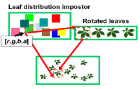

Industry advanced product development
I'm a staff engineer in Arm's Machine Learning Group with Ian Bratt and David Mansell. My current work involves analysing neural networks of future use-cases, identifying the most relevant operations and data patterns, capturing key insights with data science techniques to advance real-world performance future Arm's new software and hardware solutions. Between 2016-2017 I worked in Arm's Architecture and Technology Group, in the Intelligent Machines Future System Designs team, working with Paul Hughes analysing and prototyping computer vision and ML subsystems for ADAS. In 2012 I joined Arm's Processor Division working in system architecture and heterogeneous computing with Charles Garcia-Tobin and Jason Parker.
Academic research
I have a Ph. D. in Computer Science from University of Girona. My research concerned with parallel efficient data structures for data visualization, geometric modeling, image-based data structures and ray-tracing. My work explored practical applications in a variety of areas in computer graphics, including real-time tree rendering, GPU efficient data-structures for geometric and texturing, and more recently dynamic parallel data-structures for ray-tracing and general-purpose GPU applications. In 2011 I did a doctorate research internship in ALICE Project-Team (INRIA Nancy), collaborating with Dr. Sylvain Lefebrve. In 2007 I started my Phd. in Computer Graphics joining the GGG research group, under the supervision of Dr. Gustavo Patow. In 2005 I did a research internship at Technical University of Budapest Computer Graphics Research Group collaborating with Prof. Laszlo Szirmay-Kalos. I was introduced in the Computer Graphics field advised by Prof. Mateu Sbert.
Selected projects
GPU coherency and heterogeneous computing
Heterogeneous compute and cache coherency
Prototyping and analysing computer vision use-case with new instruction sets (SVE)
Capturing requirements from Automotive ADAS / AV subsystems and modelling use-cases
Heterogeneous computing and GPU cache coherence in mobile subsystems
Selected publications
Parallel spatial data structures for interactive rendering
 Ismael Garcia
PhD Thesis, October 2012
Ismael Garcia
PhD Thesis, October 2012
Interactive Applications for Sketch-Based Editable Polycube Map
 Ismael Garcia, Jiazhi Xia, Ying He, Shi-Qing Xin, Gustavo Patow
Visualization and Computer Graphics, IEEE Transactions on (Volume:19, Issue: 7, July 2013)
Ismael Garcia, Jiazhi Xia, Ying He, Shi-Qing Xin, Gustavo Patow
Visualization and Computer Graphics, IEEE Transactions on (Volume:19, Issue: 7, July 2013)
A Runtime Cache for Interactive Procedural Modeling
 Tim Reiner, Sylvain Lefebvre, Lorenz Diener, Ismael Garcia, Bruno Jobard, Carsten Dachsbacher
SMI 2012, Shape Modeling International, Computer & Graphics
Tim Reiner, Sylvain Lefebvre, Lorenz Diener, Ismael Garcia, Bruno Jobard, Carsten Dachsbacher
SMI 2012, Shape Modeling International, Computer & Graphics
Coherent parallel hashing
 Ismael Garcia, Sylvain Lefebvre, Samuel Hornus, Anass Lasram
ACM Transactions on Graphics (Proceedings of SIGGRAPH Asia), Vol. 30(6), 2011
Ismael Garcia, Sylvain Lefebvre, Samuel Hornus, Anass Lasram
ACM Transactions on Graphics (Proceedings of SIGGRAPH Asia), Vol. 30(6), 2011
Editable Polycube Map for GPU-based Subdivision Surfaces
 Jiazhi Xia, Ismael Garcia, Ying He, Shi-Qing Xin, Gustavo Patow
Proceedings of Symposium on Interactive 3D Graphics and Games (I3D 2011)
Jiazhi Xia, Ismael Garcia, Ying He, Shi-Qing Xin, Gustavo Patow
Proceedings of Symposium on Interactive 3D Graphics and Games (I3D 2011)
IGT: Inverse Geometric Textures
 Ismael Garcia, Gustavo Patow
ACM Transactions on Graphics (Proceedings of SIGGRAPH Asia), Vol. 27(5), 2008
Ismael Garcia, Gustavo Patow
ACM Transactions on Graphics (Proceedings of SIGGRAPH Asia), Vol. 27(5), 2008
Generation and interactive visualization of 3D vegetation
 Ismael Garcia, 2007 (Advised by Gustavo Patow and Mateu Sbert)
Master thesis in Computing, from the University of Girona and the UPC Barcelona Tech
Ismael Garcia, 2007 (Advised by Gustavo Patow and Mateu Sbert)
Master thesis in Computing, from the University of Girona and the UPC Barcelona Tech
Multi-layered indirect texturing for tree rendering
 Ismael Garcia, Gustavo Patow, Laszlo Szirmay-Kalos, Mateu Sbert,
Eurographics Workshop on Natural Phenomena 2007
Ismael Garcia, Gustavo Patow, Laszlo Szirmay-Kalos, Mateu Sbert,
Eurographics Workshop on Natural Phenomena 2007
Tree rendering with billboard clouds
 Ismael Garcia, Mateu Sbert, Laszlo Szirmay-Kalos Third Hungarian Conference on Computer Graphics and Geometry, 2005
Leaf cluster impostors for tree rendering with parallax
 Ismael Garcia, Mateu Sbert, Laszlo Szirmay-Kalos.
Short Paper of Eurographics (Dublin, Ireland), pp. 69-72, 2005
Ismael Garcia, Mateu Sbert, Laszlo Szirmay-Kalos.
Short Paper of Eurographics (Dublin, Ireland), pp. 69-72, 2005
Academic teaching
From 2010 to 2011 Multimedia and computing technologies,
Technical Computer Engineering for Management (University of Girona) Teaching assistant
From 2009 to 2010 Multimedia and computing technologies,
Technical Computer Engineering for Management (University of Girona) Teaching assistant
From 2008 to 2009 Information Technologies,
Enviromental Science (University of Girona) Teaching assistant
From 2007 to 2008 Effective audio-visual presentations, Law (University of Girona)
Teaching assistant
From 2007 to 2008 Information Technologies,
Enviromental Science (University of Girona) Teaching assistant
Conference talks
2019 Global Engineering Conference
Arm internal engineering conference
2018 Data + Insights
Arm internal Data Science Conference
2011 Parallel computing for data processing, rendering & interaction,
2011 Univ. Barcelona, Event Lab, 4th November
2011 Coherent parallel hashing
SIGGRAPH Asia 2011 (Hong Kong, China).
Editable Polycube Map for GPU-based Subdivision Surfaces
Symposium on Interactive 3D Graphics and Games 2011, (San Francisco, USA).
2008 IGT: Inverse Geometric Textures
SIGGRAPH Asia 2011, (Singapure, Singapore).
2007 Multi-layered indirect texturing for tree rendering
Eurographics Workshop on Natural Phenomena 2007 (Prague, Czech Republic).
2005 Leaf cluster impostors for tree rendering with parallax
Eurographics 2005 (Dublin, Ireland).
Supervised Bachelor Students:
2017 Gershom Akoli Agim
Deep Neural Networks on Cortex-A Analysis of CPU Inference on Vision workloads MEng Electrical & Electronic Engineering Hons Project, Heriot-Watt University
2016 Jan-Peter Larsson
3D Reconstruction using Stereo Matching Techniques on Scalable Vector Processors MEng Electrical Hons Project, Edinburgh University
2011 Enrique Nuzete
Interactive polycubemap editor BEng Project, Technical Computer Engineering for Management
2011 Tania Mendes
Modelling and visualization of skeleton-based animations BEng Project, Technical Computer Engineering for Management
2007 Verena Skuk
Procedural modelling and rendering of vegetation Student Research Project, University of Girona
2007 Isaac Moles
Real-time rendering of large forest BEng Project, Technical Computer Engineering for Management
Other professional activities
Program Committee Member
CGVCVIP Computer Graphics, Visualization, Computer Vision & Image Processing
2012 http://www.iadisportal.org/digital-library/iadis-international-conference-computer-graphics-visualization-computer-vision-and-image-processing-2012-part-of-mccsis-2012
CEIG:
2015 http://ceig2015.uji.es
Reviewer
Siggraph Asia:
2014 https://sa2014.siggraph.org/en 2015 https://sa2015.siggraph.org/en
CGI Computer Graphics International:
2012 https://blogs.bournemouth.ac.uk/cgi2012
I3D Interactive 3D Graphics and Games:
2012 https://i3dsymposium.github.io/2012
EG Eurographics:
2008 https://www.ics.forth.gr/eg2008/home.php 2013 http://eg2013.udg.edu
Computer Animation and Virtual Worlds Journal:
2014 https://onlinelibrary.wiley.com/journal/1546427x
CEIG Congreso Español de Informática Gráfica:
2015 http://ceig2015.uji.es 2009 https://dblp.org/db/conf/ceig/ceig2009.html 2008 http://www.lsi.upc.edu/events/ceig
Conference Organizer
2009 Eurographics Symposium on Rendering, EGSR http://iiia.udg.edu/EGSR2009/ Girona, Spain Local organizer
Industry research collaborations
NVIDIA Mutual Non-Disclosure Agreement NVIDIA GPU Mesh Processing tools
Education and training
2007 – 2012 Ph.D. in Computer Science
Dissertation: Parallel spatial data structures for interactive rendering. BR PhD Fellowship from the University of Girona
2006 – 2007 Master in computing
From the University of Girona, and the UPC Barcelona Tech
2003 – 2006 Computer Engineering
University of Girona, (Spain)
1999 – 2003 Technical Computer Engineering for Management
University of Girona, (Spain)
Honors and awards
2007 Generation and real-time visualization of 3D vegetation
Best UdG-CS project award 2006/2007 University of Girona Patronat Award 12th Edition winner Supervised by Gustavo Patow and Mateu Sbert
Academic experience
From June 2011 to December 2013 Advances in virtual reality for cutting edge applications
Spanish Ministry of Science and Technology Project (TIN2010-20590-C02-02) Research developer, http://ggg.udg.edu/projectes/TIN2010/index.shtml
From November 2007 to July 2010 CALBaD. Computer Aided Light Based Design
Spanish Ministry of Science and Technology Project (TIN2007-67120) Research developer, http://ggg.udg.edu/projectes/TIN2007-67120/
From October 2009 to December 2009 Research intership - INRIA Nancy (France), Alice project-team
Phd thesis research intership under supervision of Dr.Sylvain Lefebvre (Mobility grant TME2008-00961) Research developer http://alice.loria.fr/
From May 2007 to May 2011 PhD research fellowship Universitat de Girona,
(BR) Research PhD student, http://www.gametools.org
From September 2004 to April 2007 Gametools Project
European Union Project (IST-2-004363) Research developer, http://www.gametools.org
From February 2010 to April 2010 Research intership - INRIA Nancy (France), Alice project-team
Phd thesis research intership under supervision of Dr.Sylvain Lefebvre (INRIA contract) Research developer, http://alice.loria.fr/
From February 2005 to May 2005 Research undergraduate intership - Technical University of Budapest Undergraduate final project under supervision of Prof.László Szirmay-Kalos (Erasmus programme grant).
Research developer http://cg.iit.bme.hu/portal/en/publications/volume-visualization
Previous experience
From June 2003 to March 2006 El Baúl S.A. – Grupo editorial el baúl
Web developer Redesign and implementation of a corporative application to the web management of adverts http://www.elbaul.es
From July 2002 to December 2002 Institut d’Informàtica i Aplicacions, Universitat de Girona
Software developer Analysis and performance analysis of of the Sony’s Playstation 2 Linux Development Kit. http://ima.udg.es/iiia/GGG/TIC2001-2416-C03-01/
From June 2000 to September 2000 Igm Web S.A.
Web developer Design and implementation of several corporative websites. http://www.igmweb.com/indexcat.html
From June 1999 to September 1999 Kripton Networks
Web technical writer Writing technical reviews of videogames as a freelance web journalist. http://www.iespana.es/area64/
There should be whitespace between paragraphs.
There should be whitespace between paragraphs. We recommend including a README, or a file with information about your project.
Header 1
This is a normal paragraph following a header. GitHub is a code hosting platform for version control and collaboration. It lets you and others work together on projects from anywhere.
Header 2
This is a blockquote following a header.
When something is important enough, you do it even if the odds are not in your favor.
Header 3
// Javascript code with syntax highlighting.
var fun = function lang(l) {
dateformat.i18n = require('./lang/' + l)
return true;
}
# Ruby code with syntax highlighting
GitHubPages::Dependencies.gems.each do |gem, version|
s.add_dependency(gem, "= #{version}")
end
Header 4
- This is an unordered list following a header.
- This is an unordered list following a header.
- This is an unordered list following a header.
Header 5
- This is an ordered list following a header.
- This is an ordered list following a header.
- This is an ordered list following a header.
Header 6
| head1 | head two | three |
|---|---|---|
| ok | good swedish fish | nice |
| out of stock | good and plenty | nice |
| ok | good oreos |
hmm |
| ok | good zoute drop |
yumm |
There’s a horizontal rule below this.
Here is an unordered list:
- Item foo
- Item bar
- Item baz
- Item zip
And an ordered list:
- Item one
- Item two
- Item three
- Item four
And a nested list:
- level 1 item
- level 2 item
- level 2 item
- level 3 item
- level 3 item
- level 1 item
- level 2 item
- level 2 item
- level 2 item
- level 1 item
- level 2 item
- level 2 item
- level 1 item
Small image

Large image

Definition lists can be used with HTML syntax.
- Name
- Godzilla
- Born
- 1952
- Birthplace
- Japan
- Color
- Green
Long, single-line code blocks should not wrap. They should horizontally scroll if they are too long. This line should be long enough to demonstrate this.
The final element.